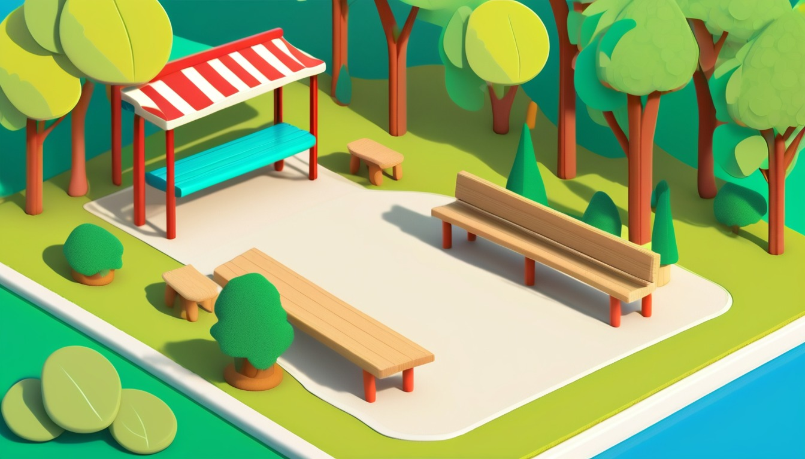

Twelve printable field-note pages that turn safe outdoor observations into tiny story scenes.
Audience: Families, homeschool groups, tutors, co-ops, library tables, and calm field-day groups guiding ages 7-11.
Format: 12 printable nature-walk field notes plus adult guide tools, walk formats, and take-home field cards
Family-safe printable writing pages for adult-led, offline story practice.
$33
Included
12 printable story field-note pages
Adult setup guide
Field table setup notes
Observation-to-story coaching moves
Privacy and site-rule notes
Family handoff notes
Six adult-led walk formats
Ten take-home field cards
Eight optional share prompts
Provider-ready PDF and ZIP artifact
Adult guide
Observation-to-story setup
Before the walk
Choose one familiar outdoor space that can be watched calmly from one adult-approved area.
Set the rule before stepping out: look, listen, point, and leave living things undisturbed.
Give each child one pencil, one clipboard, and one field note sheet with wide blank lines.
Pick one printed Plot Sprout world picture to carry as the story bridge from real detail to fiction.
Name the walk mission in one sentence: today we are finding details, not finishing a whole story.
Field table setup
Use a flat table, bench, or clipboard stack with pencils, crayons, and printed note pages within adult reach.
Make four clear boxes on the main page: I notice, It could mean, Story job, and My sentence.
Keep the writing blanks large so a reluctant writer can add single words, sketches, or short phrases.
Place the printed Plot Sprout world picture at the top so every observation has a fiction doorway.
Add one adult note line for reminders such as slow down, pick one detail, or save this idea for later.
Observation-to-story
Turn color into mood: a dull gray pebble can make a quiet gate, a bright leaf can make a cheerful signal.
Turn shape into job: a curled twig can become a tiny bridge, a flat stone can become a message board.
Turn pattern into rule: if three things repeat, ask what rule the made-up world follows.
Turn sound into clue: a rustle, tap, hum, or crunch can become a hint that something is about to change.
Ask for one real detail and one made-up detail in the same sentence so observation becomes story.
Privacy and site notes
Use initials, first-name-only labels, or blank page labels for pages that leave the house.
Use broad place words such as yard, park, garden, porch, or field table instead of identifying details.
Skip house numbers, license plates, school names, and signs that identify a private place.
Use fictional names for all people in the story, even when the idea starts from a real outing.
Keep finished pages in the family folder or classroom folder unless an adult chooses a private handoff.
Family handoff
Send one field card home with the child and mark the easiest next blank for a family adult to fill in.
Tell the family adult that five to nine calm minutes is enough; the goal is one vivid story detail.
Ask the family adult to notice one specific line the child wrote instead of correcting the whole page.
Invite the family to add one fictional twist from a broad observation, such as color, shape, sound, or pattern.
Keep the completed card with the kit pages so the child can reuse the detail in a later printable story.
Reset
Gather pencils, clipboards, printed world pictures, and unused field cards into one labeled folder.
Check pages for identifying details before they go home or into a shared classroom stack.
Recycle scrap pages that only contain warm-up marks and keep pages with story-ready details.
Restock wide-blank field cards so the next walk can begin without setup delay.
Use one field note at a time. Keep every story detail broad, invented, and screen-free.
World menu
Twelve field-note worlds
Pick a world image, then turn one calm outdoor detail into a fictional story clue.
Ages 7-8
Teacup Town Weather Window
Ages 7-9
Acorn Avenue Errand Office

Ages 7-9
Pocket Park Notice Board
Ages 7-9
Button Bakery Map Mix-Up
Ages 7-9
Spoon Ferry Lunchbox Harbor
Ages 7-9
Penny Path Compass Shop
Ages 8-10
Greenhouse Gear Garden
Ages 8-10
Rain Gauge Railway
Ages 8-10
Seed Library Map Room
Ages 8-10
Moss Message Observatory
Ages 8-10
Solar Oven Picnic Station
Ages 10-11
Compass Craft Academy
Walk formats
Choose the observation rhythm
Backyard Micro-Walk
Families with a small outdoor space and writers who need a low-pressure start.
Adult chooses the watching area and reminds everyone to look and listen without disturbing living things.
Child points to three still details: one color, one shape, and one pattern.
Adult asks what this detail could do in a made-up world after each observation.
Child writes one favorite detail on the field page before going back inside.
Park Bench Circle
Groups that need a seated, calm, adult-led format.
Adult picks one bench or sitting spot and hands out field pages.
Everyone looks outward and silently chooses one detail from near, middle, and far view.
Adult leads a round where each child turns one detail into a story job.
Each child writes one sentence that starts with a real observation and ends with fiction.
Window-to-Yard Scan
Home days when staying indoors is the best fit.
Adult places the printed world picture beside a clear window view.
Child chooses one outdoor detail they can see without leaving the room.
Adult asks which Plot Sprout world could use that detail and why.
Child fills one field card with the real detail, the made-up use, and one story question.
Texture Hunt From a Distance
Kids who like sorting and need simple choices.
Adult describes four texture choices: smooth, rough, lined, and speckled.
Child points to one example of each without picking anything up.
Adult helps the child choose the texture that feels most story-ready.
Child writes a sentence where that texture becomes a clue, tool, or setting detail.
Sound and Shade Stroll
Quiet writers who notice sound before they notice objects.
Adult leads a slow walk within the chosen outdoor space.
Everyone pauses twice to listen for gentle sounds and notice light or shade.
Child chooses one sound or shade detail and gives it a fictional job.
Adult brings the group back to the writing spot for one short field-note sentence.
Object Hero Loop
Writers who like turning ordinary things into story helpers.
Adult asks each child to choose one nonliving object they can see clearly.
Writer describes what the object looks like using two plain details.
Adult asks what helpful job the object could have in a Plot Sprout world.
Child writes a hero object line with a blank for one extra detail to add later.
Take-home field cards
Finish one field detail later
5 minutes | setting detail
Leaf Shape Setting
Notice one leaf shape from a safe viewing spot. Write the shape here: ____________________. Now make it part of a story setting: ____________________.
In our story, the leaf shape made the place feel ____________________.
6 minutes | pattern noticing
Three-Thing Pattern
Find a pattern with three similar details, such as color, size, or spacing. The pattern I noticed is ____________________. The story rule it suggests is ____________________.
Our family added this pattern rule: ____________________.
7 minutes | object-to-story
Pebble With a Job
Choose one small nonliving object you can see. It looks like ____________________. In the story, its job is ____________________.
The object became important when ____________________.
8 minutes | sequence path
Start, Middle, Later
Write a tiny story path from one observation. First ____________________. Next ____________________. Later ____________________.
The part we would act out first is ____________________.
5 minutes | revision detail
Add One Clear Detail
Reread one sentence from your field notes. Add one color, shape, or sound detail here: ____________________. Revised sentence: ____________________.
The new detail made the sentence clearer because ____________________.
6 minutes | sensory detail
Sound Clue
Listen from an adult-approved spot and name one gentle sound. The sound is ____________________. In the story, it means ____________________.
Our made-up sound clue would tell the character ____________________.
7 minutes | setting detail
Shadow Door
Look for one patch of shade or light. It looks like ____________________. In a Plot Sprout world, it could be a doorway to ____________________.
The doorway should open only when ____________________.
8 minutes | pattern noticing
Repeated Color Signal
Find one color that appears more than once. The color is ____________________. The message it sends in the story is ____________________.
Our color signal means ____________________.
9 minutes | object-to-story
Ordinary Thing, Strange Use
Pick one ordinary thing you can see from where you stand. It is ____________________. Give it a surprising story use: ____________________.
The surprising use we like best is ____________________.
6 minutes | revision detail
Better Ending Detail
Choose one ending sentence or final idea. Add one detail that shows where the character is: ____________________. New ending: ____________________.
The ending now feels more complete because ____________________.
Optional share prompts
My favorite real detail was ____________________ because it helped the story feel clear.
One made-up detail we added was ____________________.
The setting changed when we noticed ____________________.
A pattern I found was ____________________.
The object that became important was ____________________.
A sentence I want to keep is ____________________.
The next story question I would ask is ____________________.
A family detail we can add later is ____________________.
Field Note 1 | Ages 7-8 | safe observation
Teacup Window Leaf Watch
Teacup Town Weather Window
Adult setup: Print the page, bring one pencil, choose a calm outdoor spot, set an eyes-only rule for living things, and keep the group together.
Stand or sit beside your adult. Choose one detail you can see from your spot and imagine how a tiny teacup neighbor would notice it.
Notice
I noticed one outdoor thing from my safe spot: ____________________.
Detail bank
Three soft details I can add are color ____________________, shape ____________________, and sound ____________________.
Story seed
In Teacup Town, the window helper spotted ____________________ and thought it meant a tiny surprise was coming.
Sentence path
First the helper saw ____________________. Then the teacup neighbor wondered ____________________. At last they decided ____________________.
Revision nudge
Make one sentence clearer by adding a color or size detail here: ____________________.
Quiet option
Quiet option: point to one detail, then write only three words about it: ____________________.
At home, tell someone how the Teacup Town window clue became ____________________.
Field Note 2 | Ages 7-9 | setting detail
Acorn Avenue Errand Clue
Acorn Avenue Errand Office
Adult setup: Print the page, bring one pencil, choose a calm yard or park bench area, and remind the child to observe without collecting items.
Pretend Acorn Avenue has a tiny errand office. Look for one ordinary outdoor clue that could change the day's message.
Notice
The outdoor clue I noticed for the errand office is ____________________.
Detail bank
The clue's color is ____________________, its texture looks ____________________, and it sits near ____________________.
Story seed
The Acorn Avenue clerk found ____________________ on the errand shelf and had to send a careful message.
Sentence path
The clerk needed ____________________, but the outdoor clue showed ____________________, so the new errand became ____________________.
Revision nudge
Add one setting detail that tells where the clerk is standing: ____________________.
Quiet option
Quiet option: draw a small box around your favorite clue word and copy it here: ____________________.
At home, turn the errand clue into a two-sentence story about ____________________.
Field Note 3 | Ages 7-9 | pattern noticing
Pocket Park Pattern Board
Pocket Park Notice Board
Adult setup: Print the page, use a clipboard if available, and choose a calm patch where the child can see repeated details without moving far.
Look for a pattern: same shape, same color, same spacing, or a repeated sound. Then pretend it belongs on the Pocket Park board.
Notice
A pattern I noticed is ____________________.
Detail bank
The pattern repeats like ____________________, changes near ____________________, and makes the park feel ____________________.
Story seed
On the Pocket Park board, someone left a pretend note that said the pattern of ____________________ was a secret story clue.
Sentence path
I saw ____________________. It repeated when ____________________. My character used the pattern to decide ____________________.
Revision nudge
Circle the plainest word in your story and replace it with a clearer pattern word: ____________________.
Quiet option
Quiet option: make three tiny marks for the pattern, then name it here: ____________________.
At home, ask someone to guess which pattern started the story: ____________________.
Field Note 4 | Ages 7-9 | sequence path
Button Bakery Direction Mix-Up
Button Bakery Map Mix-Up
Adult setup: Print the page, bring one pencil, and choose an outdoor spot with three visible features such as a bench, planter, and tree.
Pretend the Button Bakery note got mixed up. Use three things you can see to build the order of the story.
Notice
Thing one I see is ____________________, thing two is ____________________, and thing three is ____________________.
Detail bank
My three story moments feel like quiet ____________________, silly ____________________, and surprising ____________________.
Story seed
In Button Bakery, a mixed-up note sent the helper from ____________________ to ____________________ before the true clue appeared.
Sentence path
First ____________________. Next ____________________. Finally ____________________.
Revision nudge
Add one why word so the order makes sense: because ____________________.
Quiet option
Quiet option: number three outdoor details, then write the one that starts the story: ____________________.
At home, retell how the Button Bakery helper fixed the mix-up with ____________________.
Field Note 5 | Ages 7-9 | safe observation
Harbor Picnic Clue Page
Spoon Ferry Lunchbox Harbor
Adult setup: Print one page, choose a calm outdoor view, and remind the kid to look only and stay with the grown-up.
Find three broad clues you can see or hear, then pretend one belongs in Spoon Ferry Lunchbox Harbor.
Notice
I notice a tiny harbor clue: ____________________.
Detail bank
Collect three safe details: color ____________________, shape ____________________, sound ____________________.
Story seed
A lunchbox ferry captain finds ____________________ beside the pretend dock.
Sentence path
First ____________________, then ____________________, so the captain decides ____________________.
Revision nudge
Add one clearer color, size, or sound to the quietest sentence: ____________________.
Quiet option
Quiet version: whisper your detail to the grown-up, then write one word: ____________________.
At home, turn your best outdoor clue into one story sentence: ____________________.
Field Note 6 | Ages 7-9 | setting detail
Compass Shop Detail Page
Penny Path Compass Shop
Adult setup: Print the page and choose a safe standing spot with a clear view of sky, ground, plants, or garden edges.
Look for details that could belong in Penny Path Compass Shop, then write them as setting clues.
Notice
The compass shop window might show ____________________.
Detail bank
Setting bank: color clue ____________________, line clue ____________________, tiny sound ____________________.
Story seed
A pocket compass refuses to point until the shopkeeper notices ____________________.
Sentence path
The shopkeeper sees ____________________, wonders ____________________, and chooses ____________________.
Revision nudge
Replace one plain word with a sharper outdoor detail: ____________________.
Quiet option
Quiet version: choose one clue silently and write it here: ____________________.
At home, use your compass clue to open a two-sentence story: ____________________.
Field Note 7 | Ages 8-10 | pattern noticing
Greenhouse Gear Pattern Page
Greenhouse Gear Garden
Adult setup: Print one page, choose a garden view or porch view, and keep the activity looking only.
Find something that repeats in shape, color, spacing, or sound, then turn that pattern into a story clue.
Notice
I notice something that repeats: ____________________.
Detail bank
Pattern bank: shape ____________________, color ____________________, spacing ____________________.
Story seed
A tiny greenhouse machine begins humming when ____________________ repeats three times.
Sentence path
First the pattern is ____________________, next it changes to ____________________, finally the helper writes ____________________.
Revision nudge
Add one more pattern detail to the sentence that feels too plain: ____________________.
Quiet option
Quiet version: choose one repeating thing silently and write it: ____________________.
At home, use your pattern as the secret signal in a garden story: ____________________.
Field Note 8 | Ages 8-10 | sequence path
Rain Gauge Railway Step Page
Rain Gauge Railway
Adult setup: Print the page and choose a dry, calm viewing spot after light rain or during a normal outdoor walk.
Pick three visible clues and pretend each one is a tiny railway stop in order.
Notice
The first rain-gauge clue I notice is ____________________.
Detail bank
Sequence bank: first clue ____________________, next clue ____________________, last clue ____________________.
Story seed
A railway conductor's rain gauge clicks when ____________________ appears beside the track.
Sentence path
First ____________________, next ____________________, after that ____________________, so the train helper ____________________.
Revision nudge
Add one sound or movement word to the middle step: ____________________.
Quiet option
Quiet version: tap each step on the page, then write the final clue: ____________________.
At home, write a three-step railway scene from broad outdoor clues: ____________________.
Field Note 9 | Ages 8-10 | setting detail
Seed Shelf Clue Catalog
Seed Library Map Room
Adult setup: Print one page, bring a pencil, and choose a safe familiar outdoor area. Remind the child to observe with eyes and ears only, then use invented story labels.
Stand with your adult and choose three broad nature details. Pretend they belong in a tiny seed library that needs one new story clue.
Notice
I notice one tiny shape, color, or sound near the seed shelf: ____________________.
Detail bank
Three field details I can borrow for my story are ____________________, ____________________, and ____________________.
Story seed
A careful keeper finds a seed packet labeled with this mystery: ____________________.
Sentence path
First the keeper notices ____________________; next the room changes by ____________________; then the keeper writes ____________________.
Revision nudge
Add one stronger setting detail to show where the seed clue rests: ____________________.
Quiet option
Quiet option: circle one detail and copy it into a whisper-small story line: ____________________.
At home, turn your best field detail into the first line of a seed-library tale: ____________________.
Field Note 10 | Ages 8-10 | pattern noticing
Moss Signal Pattern Watch
Moss Message Observatory
Adult setup: Print the field note and choose a quiet observation spot with clear adult boundaries. Use broad labels and keep hands to yourself.
Look for a pattern that repeats, almost repeats, or changes suddenly. Turn that pattern into a secret observatory message.
Notice
I notice a repeating shape or color pattern that looks like ____________________.
Detail bank
My pattern bank has tiny dots ____________________, soft lines ____________________, and a surprise gap ____________________.
Story seed
The observatory receives a soft message that repeats this clue: ____________________.
Sentence path
First the message appears as ____________________; next it repeats near ____________________; then my character understands ____________________.
Revision nudge
Revise one plain detail by adding pattern words such as speckled, lined, clustered, or faded: ____________________.
Quiet option
Quiet option: point silently to one pattern, then write the message it might mean: ____________________.
At home, make the pattern become a clue in a short observatory scene: ____________________.
Field Note 11 | Ages 8-10 | sequence path
Sun Patch Scene Steps
Solar Oven Picnic Station
Adult setup: Print the page, bring a pencil, and choose an adult-approved spot. This is a looking-and-writing activity with no heat tools.
Pick one object to become the station's important story prop. Notice what is beside it, above it, and changed around it.
Notice
I notice the sun-and-shade line sits beside ____________________.